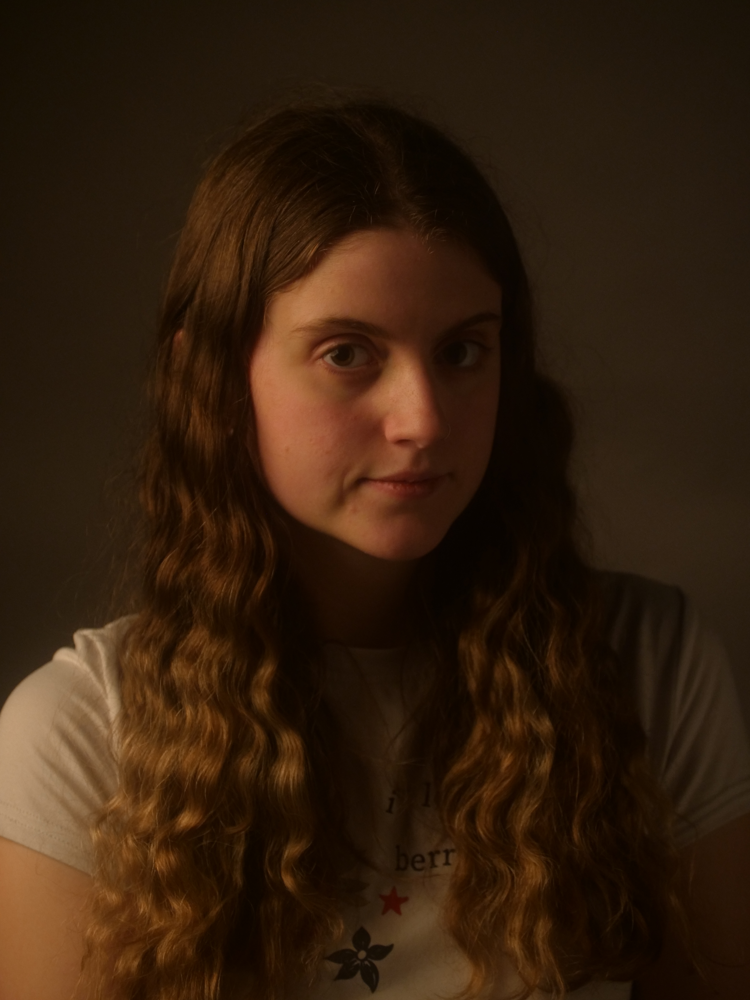

Media Practitioner
Photography & Visual Storytelling

I am a Photographer and Media practitioner specialising in portrait photography and Digital Media. A graduand from Media Production and Digital Arts in TU Dublin, I am proficient in all aspects of media creation including videography, photography, and post production.
Ever since I started my journey in media production, I have been interested in capturing each subject's unique personality and expression through portrait photography. For enquiries, please see the contact section.
Email: hello@saoirsemahon.ie
Or reach out VIA Instagram